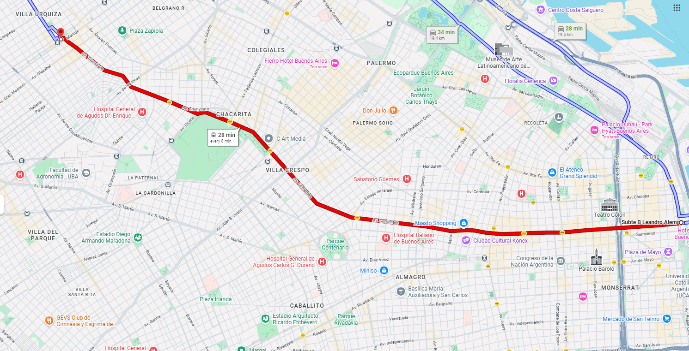

Destinos principales
- Juan Manuel de Rosas / Villa Urquiza
- Federico Lacroze
- Carlos Gardel / Abasto
- Carlos Pellegrini / Obelisco
- Leandro N. Alem / Microcentro
Servicio subterráneo urbano
La Línea B conecta Villa Urquiza con el Microcentro, integrando zonas residenciales, comerciales, universitarias y puntos clave de combinación dentro de la Ciudad de Buenos Aires.
Paradas y estaciones
Recorrido completo de la Línea B desde Juan Manuel de Rosas hasta Leandro N. Alem, destacando las estaciones principales y sus conexiones más relevantes.
Villa Urquiza · Cabecera oeste
Villa Urquiza
Parque Chas
Villa Ortúzar
Conexión con el Ferrocarril Urquiza
Chacarita / Villa Crespo
Osvaldo Pugliese · Villa Crespo
Parque Centenario
Zona universitaria y comercial
Cercana al Abasto Shopping
Conexión con la Línea H
AMIA
Centro
Centro / zona teatral
Conexión con Líneas C y D · Obelisco
Microcentro Norte
Microcentro / Puerto Madero · Cabecera este
Mapa y ubicación
Recorrido aproximado de la Línea B entre Juan Manuel de Rosas y Leandro N. Alem.

El mapa muestra la zona general del recorrido de la Línea B. Para el trazado exacto, se puede complementar con el detalle de estaciones.
La Línea B opera dentro de la Ciudad Autónoma de Buenos Aires, conectando Villa Urquiza con el Microcentro.
Horarios del servicio
La siguiente tabla muestra horarios orientativos y frecuencias aproximadas del servicio.
| Día | Inicio del servicio | Frecuencia estimada | Observaciones |
|---|---|---|---|
| Lunes a viernes | 5:30 hs | Cada 3 a 6 minutos | Mayor frecuencia en hora pico. |
| Sábados | 6:00 hs | Cada 6 a 8 minutos | Frecuencia media. |
| Domingos y feriados | 8:00 hs | Cada 8 a 10 minutos | Servicio reducido. |
Últimos servicios desde ambas cabeceras.
Los horarios y frecuencias son orientativos y pueden variar según la operación del servicio.
Accesibilidad
La propuesta considera criterios de accesibilidad visual, física y digital para facilitar el uso de la información por parte de todos los usuarios.
La información de estaciones, combinaciones y salidas se presenta con señalización visual simple, clara y fácil de identificar.
Las estaciones contemplan accesos adaptados y asistencia para facilitar el ingreso y egreso de personas con movilidad reducida.
El servicio considera espacios de prioridad para personas con discapacidad, personas mayores, embarazadas y usuarios que requieran mayor comodidad durante el viaje.